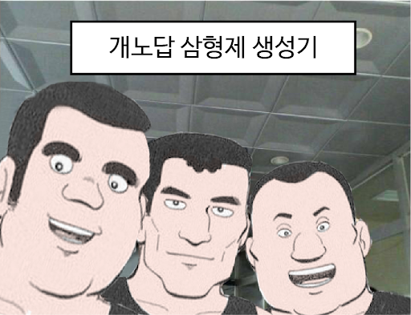

개성 강한 혼성 5인조 주인공 구성은 얼마 뒤에 나온 초전자로보 컴배틀러V와 비밀전대 고레인저의 탄생에도 영향을 주며 이후 거대로봇물에서부터 슈퍼전대 시리즈까지 다방면에 영향을 끼쳤다. 사실상 슈퍼전대 시리즈의 원조로, 특히 1991년 방영된 《조인전대 제트맨》은 바로 이 작품의 모티브를 거의 그대로 따서 만들었다. 참고로 코드네임 갓챠맨은 팀명이 아니라, 메인 주인공이자 리더인 독수리 켄에게만 붙여진 별칭이다. 다른 멤버는 그냥 과학닌자대 G-몇호 또는 대원으로 불린다. 또한 70년대 만화임을 감안하더라도 특히 2000년대 이후의 일본에서는 과학닌자대원들의 행동이 지나치게 어른스럽지 않냐는 의견이 종종 나오는 편. 심지어 쥰은 16세임에도 작중에서 주류 묘사만 안 나올 뿐이지 사실상 바를 운영하질 않나, 켄과 죠는 일본에서는 일단은 성인 취급을 받는 18세이긴 하지만 심지어 죠는 비번일 때는 카레이서[1]로 활동할 정도로, 도저히 18세라고 보긴 힘들다. 물론 당시 70년대의 미국, 일본의 문화 특성도 고려해야 할 것이다
다만 하는 행동들은 분명 성인이긴 해도 감정이나 마음은 영락없이 민감한 소년소녀들인지라 켄은 아버지의 행적을 쫓아 임무도 내팽겨치고 가다 게렉터의 함정에 빠지거나, 죠는 복수심에 불타 감정적인 행동을 하고, 쥰은 옛 친구가 게렉터임을 부정하며 감싸주려 들었던 에피소드가 있으며, 류도 자신의 실수에 죄책감을 느껴 과학닌자대를 그만두려 하는 등 아직 마음은 덜 성숙하여 방황을 하는 등의 모습도 그려낸 것이 특징이다. 때문에 일본 만화 쪽에서 히어로인 5인조 청소년들의 방황을 그린 초창기 작품 중 하나라고도 볼 수 있다. 이 점은 일단은 정신적 후속작에 가까운 갓챠맨 크라우즈에서도 이어진다. 그래서인지 후술하겠지만, 2013년 경엔 한동안 한국에선 독수리 켄은 분노조절장애나 싸이코, 콘돌 죠는 버드 미사일 성애자라는 식의 약간의 왜곡이 담긴 유머성 짤방이나 글이 인터넷 사이트들에서 꽤 많이 돌아다녔다.
단 죠가 버드미사일 성애자라는 것은 일본에서도 옛날부터 유머로 언급된 내용이다. 작중 과학닌자대 대원들이 입는 슈트는 의외로 성능이 약한 편이다. 우선 새의 머리와 부리 모양을 한 헬멧 구조부터가 얼굴 하관이 그대로 드러나있는 구조라서 독가스같은 공격에 취약하며 헬멧 자체의 내구성도 강한 편은 아닌지 건물 파편이 콘돌 죠의 헬멧을 뚫고 머리에 박힌 적도 있으며, 몸에 입는 슈트도 갤랙터 병사들의 무기에 뚫리는 모습을 보여주기도 했고, 백조 쥰일 경우 슈트 차림임에도 슈트도 입지 않은 적들에게 기습을 받아 기절하기도 한다.[2] 손목에 장착하는 변신 장치는 손목에서 풀면 변신이 해제되는데, 일반인도 쉽게 풀어내는 모습을 보여주며 적의 공격에 의해 끊어져 정체가 들킬 위기에 처하기도 한다. 하지만 위에 언급한 백조 쥰의 신발이 갤렉터의 손에 들어왔을 때는 완전소각장에 멀쩡함은 물론, 얼린 후에 해머로 때려도 오히려 해머가 부서지기도 하며 날개만으로 다수의 총알을 쉽게 막는 강도로 나오는 등등 묘사가 오락가락한다. 또한 1기때는 총을 사용하지 않았으며 총이라고 달고 있는건 총 형태의 툴이었다.[3] 2기때부터 총을 사용하기 시작했다. 이쪽의 개노답 삼형제는 휴먼 3영웅의 레벨이 올라가기 시작하면 막을 수 있는 방법이 없다는 뜻이다. 일단 대마법사의 존재로 마나가 무한으로 공급된다. 이 마나를 이용해 산왕이 천둥벼락을 찍기 시작하면 지상군은 죄다 갈려나간다. 영웅 점사로 킬을 노리려고 해도 성기사가 무한 힐을 해주기때문에 죽이기도 어렵다. 성기사를 먼저 노리려고 해도 천상의 보호막을 쓰면 무적상태가 돼서 아예 때릴 수도 없다. 게다가 시간이 지날수록 대마법사가 소환하는 물의 정령이 점점 쌓이며, 소환물 주제에 체력도 더럽게 높아서 디스펠로 제거하기도 힘들다. 공중으로 상대하려 해도 산왕이 폭풍강타를 던지고 물의 정령이 몇 번 공격하면 어지간한 공중 유닛은 버티지 못한다. 유일한 파훼법은 레벨을 못올리게 하는 것이다. 휴먼은 3티어를 올리는 게 느린 종족이므로[1] 3영웅이 갖춰지는 시기도 늦다. 사냥터를 독점해 레벨을 올릴 곳을 없애버리면 제 아무리 개노답 삼형제라도 레벨이 낮으면 별 거 없기 때문에 손쉽게 요리할 수 있다. 다만 휴먼의 멀티에 몇 번 꼬라박다가 개노답 삼형제의 레벨이 오르기 시작하면 말 그대로 개노답이 되니 주의.